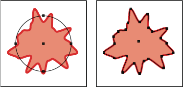

About effects and filters
Many commands for changing the look of objects are available in both the Filter and Effect menus. For example, all of the commands in the Filter > Artistic submenu are also listed in the Effect > Artistic submenu. However, filters and effects have different consequences, so it’s important to understand the difference in their use.
Effects are live, which means you can apply an effect command to an object and then continue to modify the effect’s options or remove the effect at any time using the Appearance panel. Once you apply an effect to an object, the Appearance panel lists the effect and enables you to edit the effect, move it, duplicate it, delete it, or save it as part of a graphic style.
Filters change the underlying object, and the changes can’t be modified or removed after the filter is applied. But one advantage to reshaping an object with a filter command is that you have immediate access to the new or modified anchor points created by the filter. (When you use an effect, you must expand the object before you can access the new points.)
For a video on using the Appearance panel and effects, see www.adobe.com/go/vid0051.
